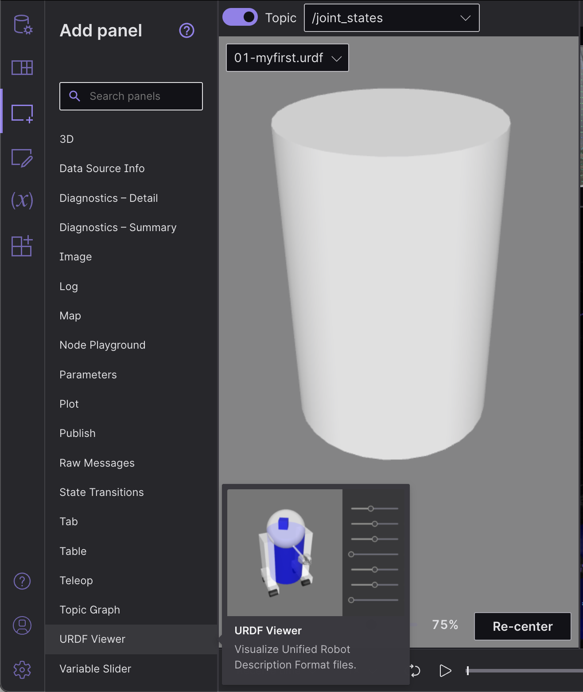

Visualiser les données ROS 2 avec Foxglove Studio
Foxglove Studio est un outil de visualisation et de débogage open source pour vos données robotiques.
Il est disponible de différentes manières pour rendre le développement aussi pratique que possible - il peut être exécuté comme une application de bureau autonome, accessible via votre navigateur ou même auto-hébergé sur votre propre domaine.
Affichez le code source sur GitHub.
Installation
Pour utiliser l’application Web, ouvrez simplement Google Chrome et accédez à studio.foxglove.dev.
Pour utiliser l’application de bureau pour Linux, macOS ou Windows, téléchargez-la directement depuis le site Web de Foxglove Studio.
Se connecter à une source de données
Lors de l’ouverture de Foxglove Studio, vous verrez une boîte de dialogue avec une liste de toutes les sources de données possibles.
Pour vous connecter à votre pile ROS 2, cliquez sur « Ouvrir une connexion », sélectionnez l’onglet « Rosbridge (ROS 1 & 2) », et configurez votre « URL WebSocket ».
Vous pouvez également glisser-déposer n’importe quel fichier local ROS 2 .db3 directement dans l’application pour les charger pour la lecture.
Note
Afin de charger des définitions de messages personnalisés dans vos fichiers ROS 2, essayez de les convertir au `format de fichier MCAP <https://mcap.dev >`__.
Consultez la docs Foxglove Studio pour des instructions plus détaillées.
Plans de construction avec panneaux
Les Panels sont des interfaces de visualisation modulaires qui peuvent être configurées et organisées dans Studio `layouts <https://foxglove.dev/docs/studio/layouts> `__. Vous pouvez également enregistrer vos mises en page pour une utilisation future, pour votre propre référence personnelle ou avec votre plus grande équipe de robotique.
Retrouvez la liste complète des panneaux disponibles dans l’onglet « Ajouter un panneau » de la barre latérale.
Nous en avons souligné quelques-uns particulièrement utiles ci-dessous :
1 3D : Afficher les marqueurs de visualisation dans une scène 3D
Publiez des messages marqueurs pour ajouter des formes primitives (flèches, sphères, etc.) et des visualisations plus complexes (grilles d’occupation, nuages de points, etc.) à la scène de votre panneau 3D.
Choisissez les sujets que vous souhaitez afficher via le sélecteur de sujet sur la gauche, et configurez les paramètres de visualisation de chaque sujet dans le menu « Modifier les paramètres du sujet ».

Référencez les docs pour une liste complète des types de messages pris en charge et quelques interactions utilisateur utiles.
2 Diagnostics : filtrer et trier les messages de diagnostic
Afficher l’état des nœuds vus (c’est-à-dire obsolète, erreur, avertissement ou OK) à partir de sujets avec un type de données diagnostic_msgs/msg/DiagnosticArray dans un flux en cours d’exécution, et afficher les données de diagnostic pour un ``diagnostic_name/hardware_id` donné `.

Référez-vous à la docs pour plus de détails.
3 Image : Afficher les images du flux de la caméra
Sélectionnez un sujet sensor_msgs/msg/Image ou sensor_msgs/msg/CompressedImage à afficher.

Référez-vous à la docs pour plus de détails.
4 Journal : afficher les messages du journal
Pour afficher les messages rcl_interfaces/msg/Log en direct, utilisez l’application de bureau pour connecter à votre pile ROS en cours d’exécution. Pour afficher les messages rcl_interfaces/msg/Log à partir d’un fichier de données préenregistré, vous pouvez glisser-déposer votre fichier dans l’application web ou de bureau .
Ensuite, ajoutez un panneau Log à votre mise en page. Si vous vous êtes correctement connecté à votre pile ROS, vous devriez maintenant voir une liste de vos messages de journal, avec la possibilité de les filtrer par nom de nœud ou niveau de gravité.
Référez-vous à la docs pour plus de détails.
5 Tracé : tracer des valeurs arbitraires dans le temps
Tracez des valeurs arbitraires à partir des chemins de message de vos sujets sur la durée de lecture.
Spécifiez les valeurs de sujet que vous souhaitez tracer le long de l’axe y. Pour l’axe des x, choisissez entre tracer l’horodatage de la valeur de l’axe des y, l’index d’élément ou un autre chemin de message de sujet personnalisé.

Référez-vous à la docs pour plus de détails.
6 Messages bruts : afficher les messages de sujet entrants
Affichez les données de rubrique entrantes dans un format d’arborescence JSON facile à lire.

Référez-vous à la docs pour plus de détails.
7 Teleop : Télé-opérez votre robot
Télé-opérez votre robot physique en publiant des messages geometry_msgs/msg/Twist sur un sujet donné dans votre pile ROS en direct.

Référez-vous à la docs pour plus de détails.
8 URDF Viewer : affichez et manipulez votre modèle URDF
Pour visualiser et contrôler votre modèle de robot dans Foxglove Studio, ouvrez l’application Web ou de bureau et ajoutez un panneau URDF Viewer à votre mise en page. Ensuite, faites glisser et déposez votre fichier URDF dans ce panneau pour visualiser votre modèle de robot.
{kind=link}
Sélectionnez n’importe quel sujet publiant un message JointState pour mettre à jour la visualisation en fonction des états conjoints publiés (par défaut, /joint_states).
Basculez sur « Contrôle manuel des articulations » pour définir les positions des articulations à l’aide des commandes fournies.

Référez-vous à la docs pour plus de détails.
Autres actions de base
1 Affichez votre graphique ROS
À l’aide de l’application de bureau, connectez à votre pile ROS en cours d’exécution. Ensuite, ajoutez un panneau Topic Graph à votre mise en page. Si vous vous êtes correctement connecté à votre pile ROS, vous devriez maintenant voir un graphique de calcul de vos nœuds, sujets et services ROS dans ce panneau. Utilisez les commandes sur le côté droit du panneau pour sélectionner les rubriques à afficher ou pour basculer entre les services.
2 Affichez et modifiez vos paramètres ROS
À l’aide de l’application de bureau, connectez à votre pile ROS en cours d’exécution. Ensuite, ajoutez un panneau Parameters à votre mise en page. Si vous vous êtes correctement connecté à votre pile ROS, vous devriez maintenant voir une vue en direct de vos rosparams actuels. Vous pouvez modifier ces valeurs de paramètres pour publier les mises à jour de rosparam dans votre pile ROS.
3 Publiez les messages sur votre pile ROS en direct
À l’aide de l’application de bureau, connectez à votre pile ROS en cours d’exécution. Ensuite, ajoutez un panneau Publier à votre mise en page.
Spécifiez le sujet sur lequel vous souhaitez publier pour déduire son type de données et remplissez le champ de texte avec un modèle de message JSON.
La sélection d’un type de données dans la liste déroulante des types de données ROS courants remplira également le champ de texte avec un modèle de message JSON.
Modifiez le modèle pour personnaliser votre message avant de cliquer sur « Publier ».